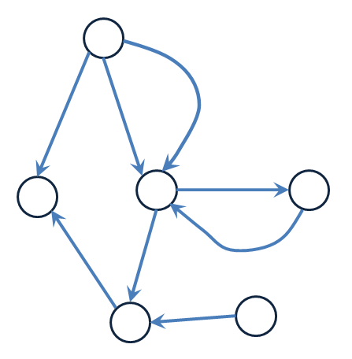

セマンティックウェブについてのメモ
公開 : 2012-02-19
最終更新日 : $Date: 2012-02-19 03:56:05 +0900 (Sun, 19 Feb 2012) $
前口上
この文書では、セマンティックウェブというものについて
個人的に調べた結果を並べています。
この文書は技術的に正確であることを意図して書いてはいますが、どこかで大嘘をついていたり、
もっと有効な方法があることを見逃していたり、経年により陳腐化しているかもしれません。
目次
- 手短に言って何者か
- やりたいことは何か
- 実現のための道具立ては何か
- 全般的な決め事は何か
- OWLとはどういうものか
- その他、雑駁なこと
手短に言って何者か
インターネット上のデータ、コンテンツ、リンクについて意味を付加することで利便性を向上させるためのプロジェクト。
W3Cのティム・バーナーズ・リーが提唱している。
やりたいことは何か
-
ウェブ上の情報を処理するような知的なエージェントが動いて、
検索以外の機能が実現できて、ユーザに便利になるようにしたい。
-
そのために、ウェブ上のデータのメタデータ（データについてのデータ）を機械で解釈できるような標準フォーマットを用意したい。
-
さらに、ウェブ上のデータのリンクにもメタデータを持たせたい。リンク（＝つながり）に意味を記述するための仕組みが欲しい。
-
セマンティックウェブで扱うメタデータのことをオントロジーと呼ぶ。（言葉を決めることも道具立ての一つ。）
-
オントロジー記述・交換言語仕様としてOWL,RDF
-
オントロジーの検索クエリー仕様としてSPARQL
-
既存HTMLにオントロジーを追加記述するための仕様としてRDFa
-
オントロジー作成ツールとして、Protege
-
オントロジーを処理するJavaのライブラリとしてJena
他にも色々なツールがある。
全般的な決め事は何か
Digital Libraries and the Semantic Webに、
まとめがある。
- 何でも識別可能
-
Everything Identifiable is on the Semantic Web
によると、すべてのもの（人物、場所、現実世界の物すべて）はオンライン上ではURIで識別される。
最近は、国際化のためIRIも使われる。
- 部分的な情報
-
Partial Information
によると、ウェブは発展途上でありセマンティックウェブもそうである。
誰でも何に対しても発言して良い。逆に言うとどこで誰が何について発言しているか、
全体を完全に把握できている人はいないことも意味する。
データが常に追加、変化がされる。それ故常に発見がある。
- 信頼のウェブ
-
Web of Trust
によると、ウェブ上の情報は何らかの文脈上に現れ、アプリケーションにとっては
情報の信頼度を評価するために文脈が必要。ウェブ上のすべてを正しいと評価しない。
真理、あるいは信頼度がアプリケーションに評価される。
- 発展性
-
Evolution
によると、独立した組織による活動が許されなくてはならない。
古いものを修正するのではなく新しいものを追加することをサポートする。
コミュニティに新旧の情報が混ざることによる情報の曖昧さやぶれをなくせるようにしなくてはならない。
人間の理解が拡張するように拡張可能であって明示されたルールに則らなくてはならない。
- 最小の設計
-
Minimalist Design
によると、簡単なものは簡単に、複雑なものは実現可能なレベルまで簡単に作ることを前提にする。
標準化も最小限にして、なるべく複雑にはしない。
OWLとはどういうものか
Web Ontology Language（略称は OWL）は、オントロジーを表現する方式の1つである。
データの構造としては有向多重グラフの形をなす。
ノードが単一の知識・データそのもの。辺がノード同士がどういう意味でつながっているかを表現する。

ノードは、その識別にURI
ないしはIRI
を使う。
インターネット上の情報について管理することができる。
ノードと辺の分類にオブジェクト指向モデルを使う
クラス、インスタンスでノードを分類する。プロパティ、プロパティインスタンスで辺を分類する。
（プロパティインスタンスというのは非公式な呼び方。）
クラスの多重継承をしてよい。
オブジェクト指向プログラミング言語とは違い、多重継承には困難が付きまとわない。
むしろ、データ分類のための表現力を確保するために必要なこと。
あるインスタンスが、同時に複数のクラスのインスタンスであってよい
結局のところクラスに属すると言うことは、
タグによる分類のようなものなのである。
同一のノードが、同時にクラスでありインスタンスであってよい
データの表現力の確保のため。ただし、OWL Full(後述)に限る。推論の決定性が損なわれるため。
OWL にはすべてのクラスのルートとなるクラスと、すべてのクラスのサブクラスとなるクラスがある
ルートは owl:Thing 、すべてのクラスのサブクラスは owl:Nothing と呼ばれている。OWLはデータ構造の基礎として
記述論理(後述)の枠組みを使っている。それゆえ、このようなことが定められている。
データモデリングの実利用上何が嬉しいかは別の話。
プロパティは単体で存在しうる
オブジェクト指向プログラミング言語ではクラスが必要だが、OWLではクラスを必要としない。
物事に自由に記述をつけることを可能にするため、このようになっている。
同一クラスに所属する別のインスタンスに全く別々のプロパティを設定することが可能。
開世界仮説で物事を評価する。
存在するデータの範囲で真と言えないならば「不明」という解釈がされる。
これが仮にデータベースでは、存在しないデータについては「偽」となる。
OWLにはサブセットが３個ある
- OWL Full
- OWLの仕様範囲内で、最も自由なオントロジーの記述が許される。
代わりに推論の決定性が確保されない。（＝推論結果が真とも偽とも言えない場合がある）
- OWL DL
- オントロジーの記述に一部制限がある。
例えばクラスでありかつインスタンスであるノードを許さない。(OWL Fullは許す。)
ただし推論結果は必ず決定的になる。
- OWL Lite
- オントロジーの記述にOWL DL以上の制限がかかる。
簡単なオントロジーを簡素なツールで処理する場合のためのサブセット。
OWL の理論的バックボーンは
OWLは記述論理(Description Logic)をその理論的バックボーンにしている。
記述論理では記述力の異なる幾つかの言語（言語ファミリーと呼んでいる。）があり、
OWL のサブセットに相当する言語がある。
記述論理の言語ファミリーとは
AL 言語 ALC言語などFL-言語、SI言語などがある。詳細は参考文献を参照
OWL Liteに相当する記述言語の言語ファミリーは
SHIF(D)と呼ばれるファミリーが相当する。比較的素朴なファミリーALCに、推移的ロール、逆ロールを加えるとSI言語になる。
SI言語に、ロール階層(H)と関数的ロール(F)を加えるとSHIF言語になる。SHIFに、データ型とデータ型ロールを加えると
SHIF(D)となり、これが、OWL Liteに相当する。
OWL DLに相当する記述言語の言語ファミリーは
SHOIN(D)と呼ばれるファミリーが相当する。SI言語にロール階層(H)とONE-OF概念(O)と制限なし数量限定(N)を加えると
SHOIN言語になる。これにSHOINにデータ型とデータ型ロールを加えると
SHOIN(D)となり、これが、OWL DLに相当する。
（詳細は参考文献を参照）
OWL DLとOWL Liteの充足可能性問題の計算量は
OWL DL(= SHOIN(D)) は、決定的チューリングマシンにより指数関数時間(EXPTIME)で計算可能。
OWL Lite(= SHIF(D)) は、非決定的チューリングマシンにより指数関数時間(NEXPTIME)で計算可能。
OWL 2という新しいバージョンがある
主な変更点は、(1)表現力の向上(2)簡単構文の導入(3)EL QL RL の３個のprofile(サブセット)の導入
(4) URIに代わり、IRIの導入。
- OWL EL
- クラスが多いオントロジー向け。(SNOMED Clinical Terms
the NCI thesaurus)
推論の計算量が最悪の場合でも多項式時間(PTIME)になる。
OWL EL のELは、記述論理のEL言語のEL.
- OWL QL
- リレーショナルデータベースと相性が良い。(シソーラス、ERモデル。UMLモデルなど)
推論の計算量が最悪の場合で非決定的アルゴリズムで対数空間(NLOGSPACE)になる。
クラスは少ないが、インスタンスは多いオントロジー向け。
OWL QL のQLは、SQLのQL.
- OWL RL
-
ルールベースの技術と相性が良い。推論の計算量が最悪の場合でも多項式時間(PTIME)になる。
RDFのトリプルを直接扱える。
OWL RLのRLは、Rule Language のRL。
その他、雑駁なこと
最近では、Linked Dataという名前の活動がされている。（これについては僕もまだまだ勉強中。）
インターネット上のデータ云々とはちょっと外れるが、
バイオインフォマティクスの研究者はオントロジーの持つ
データ整理の技法を応用して生命情報（遺伝子とか）を整理し機械に処理させやすくすることで生命現象の研究を進めたい。
http://www.geneontology.org/
https://database.riken.jp/sw/ja/Gene_Ontology/ria250i/
いったいどんな応用が？という意味では一般ユーザから見てわかりやすい製品とかサービスがあるわけではない。
このページにあることは技術的理論的な話ばかり。そういう意味では、まだまだ研究者が下積みと準備を
重ねている段階にある。
参考文献

この 作品 は クリエイティブ・コモンズ 表示 2.1 日本
ライセンスの下に提供されています。
作者: Fukuhara Kazuro.
トップページに戻る